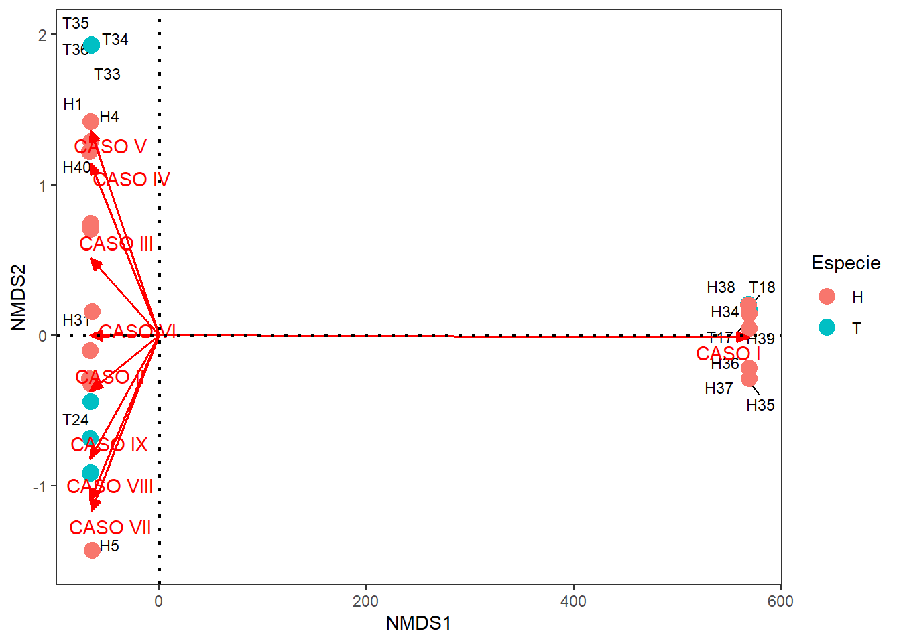
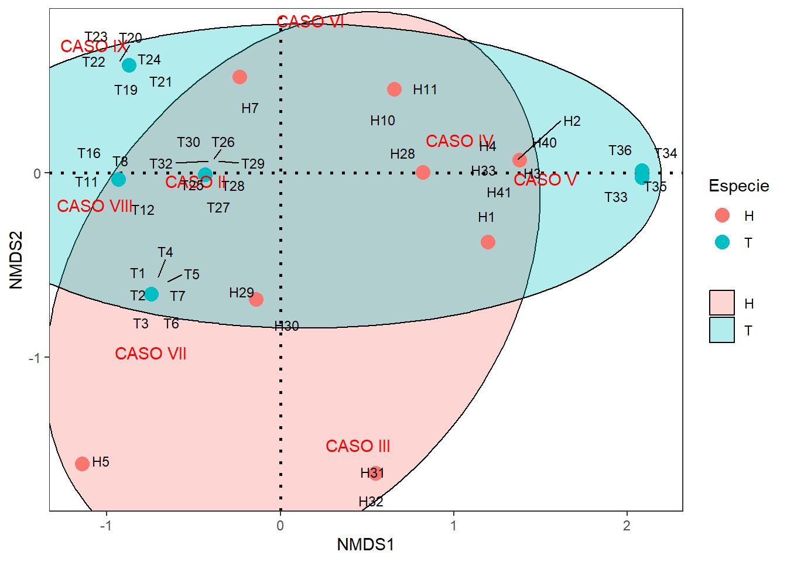
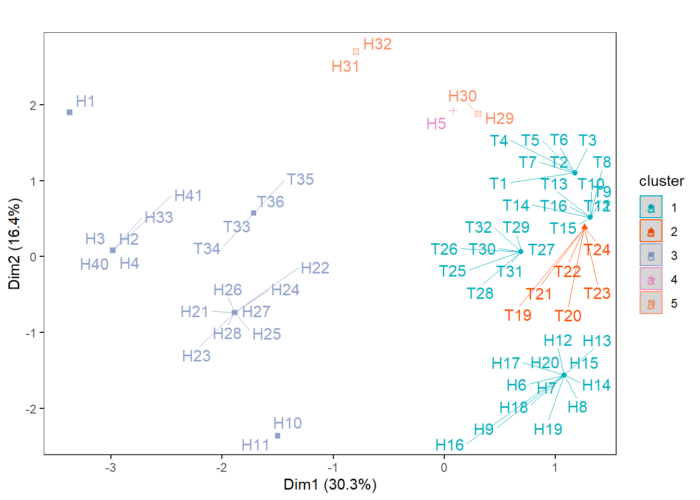

Resumen
El presente ejercicio consiste en el procesamiento inicial de los datos entregados por el profesor Pacho Correa para dar respuesta al siguiente requerimiento:
Analizar el patrón de nueve patologías asociadas a dos especies de peces: Trichomycterus nigromacuatus y Hemibrycon sierraensis ubicadas en el Río Gaira, sector de Minca, Santa Marta
Para este requerimiento, planteo realizar la propuesta de Borcard et al. (2018), con ténicas de ordenación sin restricciones (unconstrained), de clasificación y de pruebas de hipótesis multivariadas.
1. Análisis Exploratorio
Paso 1. Cargar Librerías
Librerías requeridas para el PCA.
Paso 2. Base de datos
| CASO PATOLÓGICO | ESPECIE CON REGISTRO | ...3 | DESCRIPCIÓN |
|---|---|---|---|
| NA | H. sierraensis | T. nigromaculatus | NA |
| I | x | x | Individuos encontrados en el fondo del río sin ningún tipo de alteración corporal visible |
| II | x | x | Inflamación ventral con inflamación cascular y hemorragías |
| III | x | NA | exoftalmia porr lo menos en un ojo |
| IV | x | NA | Infecciones microbianas en la región predorsal |
| V | x | x | Infecciones microbianas en la región peduncular, que en casos graves conlleva a nnecrosis d del pedunculo caudal. Aletas anal y caudal |
| VI | x | NA | Ensanchamiento de la cavidad cloacal |
| VII | x | x | Crecimiento microbianos bucales con casos de necrosis que se extiend hasta el hocico. En los casos de llos T. nigromaculatus incluye necrosis de los barbicelos |
| VIII | NA | x | Necrosis cavidad branquial y opercular, llegando a comprometer la aleta pectoral adjunta al operculo afectado |
| IX | NA | x | Perforaciones corporales con presencia de parásitos |
La Tabla 2 muestra la oranización de los datos generales para las dos especies evaluadas y los nueve tipos de patologías identificadas.
| Cod | Especie | CASO I | CASO II | CASO III | CASO IV | CASO V | CASO VI | CASO VII | CASO VIII | CASO IX | ...13 | Suma |
|---|---|---|---|---|---|---|---|---|---|---|---|---|
| T1 | T | 0 | 1 | 0 | 0 | 0 | 0 | 1 | 0 | 0 | NA | 2 |
| T2 | T | 0 | 1 | 0 | 0 | 0 | 0 | 1 | 0 | 0 | NA | 2 |
| T3 | T | 0 | 1 | 0 | 0 | 0 | 0 | 1 | 0 | 0 | NA | 2 |
| T4 | T | 0 | 1 | 0 | 0 | 0 | 0 | 1 | 0 | 0 | NA | 2 |
| T5 | T | 0 | 1 | 0 | 0 | 0 | 0 | 1 | 0 | 0 | NA | 2 |
| T6 | T | 0 | 1 | 0 | 0 | 0 | 0 | 1 | 0 | 0 | NA | 2 |
Paso 3. Diferencias entre las dos especies
La Figura 1 muestra que la mayor frecuencia de casos patológicos se presenta en H. sierraensis (H), teniendo en cuenta que su muestra es de 41 individuos, seguida por T. nigromaculatus (T) con 36 individuos evaluados.
2. Escalamiento Multidimensional no Métrico (NMDS)
Se aplicará esta técnica para explorar los gradientes en la ordenación de los 77 peces de las dos especies y su relación con las nueve patologías identificadas. Para la asociación de los datos, se utilizará la distancia de Jaccard por ser datos binarios.
Paso 1. NMDS
El estrés generado es de 0.00044 (0.044%), denotando una muy buena configuración para este análisis de ordenación de datos binarios.
A continuación se extraen las coordenadas de los individuos de las dos especies de peces, para ser ordenados con la librería ggplo2.
Ahora se extraen las coordenadas de los nueve tipos de patologías, para ser ordenadas con la librería ggplo2.
Paso 2. Figuras del NMDS
La Figura 2, muestra la ordenación del NMDS para relacionar a los nueve tipos de patologías, con los 77 peces correspondientes a las dos especies evaluadas. Se obseserva un grupo aislado hacia la derecha, el cual corresponde a los peces que solo presentaron la patología 1 (CASO I), representados en su mayoría por H. sierraensis (seis individuos) y solo dos individuos de T. nigromaculatus. El segundo grupo se ubica a la izquierda y está representado por el resto de individuos y de casos evaluados.

La Figura 3 muestra que no se presentan diferencias entre las dos especies de peces en cuanto a sus nueve casos de patologías.

3. Escalamiento Multidimensional no Métrico (NMDS) sin el Caso I
En el siguiente procedimiento se analizarán los datos, pero sin la presencia de la patología 1 (caso I), para analizar si se presenta algún gradiente complementario al anterior.
Paso 1. NMDS
Cargar la base de datos sin la patología 1 y sin los peces sin datos para el resto de patologías
# Base de datos sin patología 1
biol1 = biol[c(-17,-18,-70,-71,-72,-73,-74,-75),c(1,3,5:12)]
biol1 <-
biol1 %>%
mutate(Tot = rowSums(biol1[3:10]))Se utiliza la distancia Jaccard y el estrés generado es de 0.038 (3,8%), denotando una muy buena configuración para este análisis.
A continuación se extraen las coordenadas de los individuos de las dos especies de peces, para ser ordenados con la librería ggplo2.
A continuación se extraen las coordenadas de los nueve tipos de patologías, para ser ordenadas con la librería ggplo2.
Paso 2. Figuras del NMDS
La Figura 4, muestra la ordenación del NMDS para relacionar a los ocho tipos de patologías, con 69 peces del total evaluado (se exluyen los 8 peces que presentaron la patología 1). Se obseserva un grupo aislado hacia la derecha, el cual corresponde a los peces que solo presentaron las patologías 4 y 5 (Casos IV y V), en su mayoría representados por H. sierraensis (doce individuos) y y solo cuatro individuos de T. nigromaculatus. en la parte inferior se observa a dos individuos de H. sierraensis aislados y relacionados con la patología 3 (CASO III). El resto de peces se ubican en el mayor grupo, a la izquierda del plano cartesiano y se relacionan con las cinco patologías restantes.
La Figura 5 muestra una alta relación en las patologías de las dos especies evaluadas, aunque se logra identificar que la patología IX se encuentra más presente en individuos de T. nigromaculatus y las patologías III y VII predominan en H. sierraensis.

4. Análisis de Clúster (CLA)
Con este análisis, se pretende clasificar en Groups o clúster, a los peces evaluados y comparar dicho agrupamiento con el de las dos especies.
Paso 1. Distancia entre observaciones
Se aplicará la distancia Jaccar, debido a que son variables d tipo binario.
Paso 2. Elección del método de agrupación de mayor ajuste
2.1 Cálculo de los siete dendogramas
2.2 Cálculo de las correlaciones cofenéticas
El método de agrupación UPGMA es el que presentó el mejor ajuste cofenético.
| Met | Cofen | |
|---|---|---|
| upgma | 3 | 0.936 |
| upgmc | 4 | 0.932 |
| compl | 2 | 0.916 |
| wpgma | 5 | 0.906 |
| wpgmc | 6 | 0.889 |
| ward | 7 | 0.811 |
| simple | 1 | 0.765 |
Paso 3. Número de Groups formados
3.1 Niveles de fusión
Esta ténica muestra que la mayor amplitud se presenta en la formación de catorce Groups o clúester, que reunen a las observaciones (peces) clasificadas (Figura 6).
3.2 Método de silueta
Esta ténica muestra que la mayor amplitud se presenta en la formación de diez Groups o clúester, que reunen a las observaciones clasificadas.
[1] 14La Figura 7 muestra la formación de 14 grupos con el método de silueta
Silueta-Número óptimo de Clusters k= 14
Con una aplitud promedio de silueta 0.974026 3.3 Dendograma jerárquico final
Si bien son 14 los grupos formados, se resumen a 5 grupos, en los que si visualiza una alta similitud en los casos de las patologías de las dos especies, excepto en cinco individuos de H. sierraensis (individuos en rojo).
3.4 Dendograma no jerárquico - k-means
En la Tabla 3 se muestra un resumen de las seis primeras filas de datos, para mostrar la columna con la nueva variable agrupadora “grp” la cual presenta cinco grupos generados en los pasos anteriores.
| grp | Cod | Especie | CASO.I | CASO.II | CASO.III | CASO.IV | CASO.V | CASO.VI | CASO.VII | CASO.VIII | CASO.IX | |
|---|---|---|---|---|---|---|---|---|---|---|---|---|
| T1 | 1 | T1 | T | 0 | 1 | 0 | 0 | 0 | 0 | 1 | 0 | 0 |
| T2 | 1 | T2 | T | 0 | 1 | 0 | 0 | 0 | 0 | 1 | 0 | 0 |
| T3 | 1 | T3 | T | 0 | 1 | 0 | 0 | 0 | 0 | 1 | 0 | 0 |
| T4 | 1 | T4 | T | 0 | 1 | 0 | 0 | 0 | 0 | 1 | 0 | 0 |
| T5 | 1 | T5 | T | 0 | 1 | 0 | 0 | 0 | 0 | 1 | 0 | 0 |
| T6 | 1 | T6 | T | 0 | 1 | 0 | 0 | 0 | 0 | 1 | 0 | 0 |
la Figura 9 muestra a la clasificación de los cinco grupos de peces, basado en los nueve casos de patologías asociadas, usando la clasificación no jerárquica del K-medias.
Paso 4. Aporte de las variables a la clasificación
En rojo se identifica a los Groups taxonómicos que por su patrón de Abundance, aportan a la clasificación de los sitios.
La Figura 10 muestra que el caso II es el que caacteriza a la mayos cantidad de peces, seguido de los casos IV y V.
5. Análisis de Clúster (CLA) sin el Caso I
Con este análisis, se pretende clasificar en Groupos o clúster, a los peces evaluados sin el caso patológico I y comparar dicho agrupamiento con el de las dos especies. A continuación se procede a cargar la base de datos sin la patología 1 y sin los peces sin datos para el resto de patologías
# Base de datos sin patología 1
biol1 = biol[c(-17,-18,-70,-71,-72,-73,-74,-75),c(1,3,5:12)]
biol1 <-
biol1 %>%
mutate(Tot = rowSums(biol1[3:10]))
Paso 1. Distancia entre observaciones
Se aplicará la distancia Jaccar, debido a que son variables d tipo binario.
Paso 2. Elección del método de agrupación de mayor ajuste
2.1 Cálculo de los siete dendogramas
2.2 Cálculo de las correlaciones cofenéticas
El método de agrupación UPGMA es el que presentó el mejor ajuste cofenético.
| Met | Cofen | |
|---|---|---|
| upgma | 3 | 0.915 |
| upgmc | 4 | 0.913 |
| compl | 2 | 0.906 |
| wpgma | 5 | 0.877 |
| wpgmc | 6 | 0.856 |
| simple | 1 | 0.804 |
| ward | 7 | 0.784 |
Paso 3. Número de Groups formados
3.1 Niveles de fusión
Esta ténica muestra que la mayor amplitud se presenta en la formación de trece Groups o clúester, que reunen a las observaciones (peces) clasificadas (Figura 11).
3.2 Método de silueta
Esta ténica muestra que la mayor amplitud se presenta en la formación de diez Groups o clúester, que reunen a las observaciones clasificadas.
[1] 13La Figura 12 muestra la formación de 13 grupos con el método de silueta
Silueta-Número óptimo de Clusters k= 13
Con una aplitud promedio de silueta 0.9710145 3.3 Dendograma jerárquico final
Si bien son 13 los grupos formados, se resumen a 5 grupos, en los que si visualiza una alta similitud en los casos de las patologías de las dos especies, excepto en cinco individuos de H. sierraensis (individuos en rojo). Este patrón es casi idéntico al del clúster con los 9 casos patoólogicos.
3.4 Dendograma no jerárquico - k-means
En la Tabla 4 se muestra un resumen de las seis primeras filas de datos, para mostrar la columna con la nueva variable agrupadora “grp” la cual presenta cinco grupos generados en los pasos anteriores.
| Cod | Especie | CASO.II | CASO.III | CASO.IV | CASO.V | CASO.VI | CASO.VII | CASO.VIII | CASO.IX | |
|---|---|---|---|---|---|---|---|---|---|---|
| T1 | T1 | T | 1 | 0 | 0 | 0 | 0 | 1 | 0 | 0 |
| T2 | T2 | T | 1 | 0 | 0 | 0 | 0 | 1 | 0 | 0 |
| T3 | T3 | T | 1 | 0 | 0 | 0 | 0 | 1 | 0 | 0 |
| T4 | T4 | T | 1 | 0 | 0 | 0 | 0 | 1 | 0 | 0 |
| T5 | T5 | T | 1 | 0 | 0 | 0 | 0 | 1 | 0 | 0 |
| T6 | T6 | T | 1 | 0 | 0 | 0 | 0 | 1 | 0 | 0 |
la Figura 14 muestra a la clasificación de los cinco grupos de peces, basado en los nueve casos de patologías asociadas, usando la clasificación no jerárquica del K-medias.

Paso 4. Aporte de las variables a la clasificación
En rojo se identifica a los Groups taxonómicos que por su patrón de Abundance, aportan a la clasificación de los sitios.
La Figura 15 muestra que el caso II es el que caacteriza a la mayos cantidad de peces, seguido de los casos IV y V. Esto es similar a la clasificación con todos los casos.